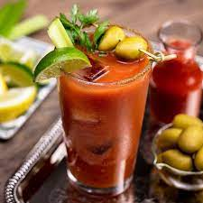

Bloody Mary

The Bloody Mary is a cocktail consisting of a base of tomato juice and vodka. It is then seasoned with savory, usually a hot spicey ingredient, and lemon juice. Traditionally garnished with celery stick but can also have, pickled beans and whatever your imagination can come up with.
Ingredients
- Celery salt
- 1 lemon wedge
- 1 lime wedge
- 2 ounces vodka
- 4 ounces tomato juice
- 2 teaspoons prepared horseradish
- 2 dashes Tabasco sauce
- 2 dashes Worcestershire sauce
- 1 pinch ground black pepper
- 1 pinch smoked paprika
- Garnish: parsley sprig
- Garnish: green olives
- Garnish: lime wedge
- Garnish: celery stalk
Steps
- Pour some celery salt onto a small plate.
- Rub the juicy side of the lemon or lime wedge along the lip of a pint glass.
- Roll the outer edge of the glass in celery salt until fully coated, then fill the glass with ice and set aside.
- Squeeze the lemon and lime wedges into a shaker and drop them in.
- Add the vodka, tomato juice, horseradish, Tabasco, Worcestershire, black pepper, paprika, plus a pinch of celery salt along with ice and shake gently.
- Strain into the prepared glass.
- Garnish with parsley sprig, 2 speared green olives, a lime wedge and a celery stalk (optional).
Return to main page